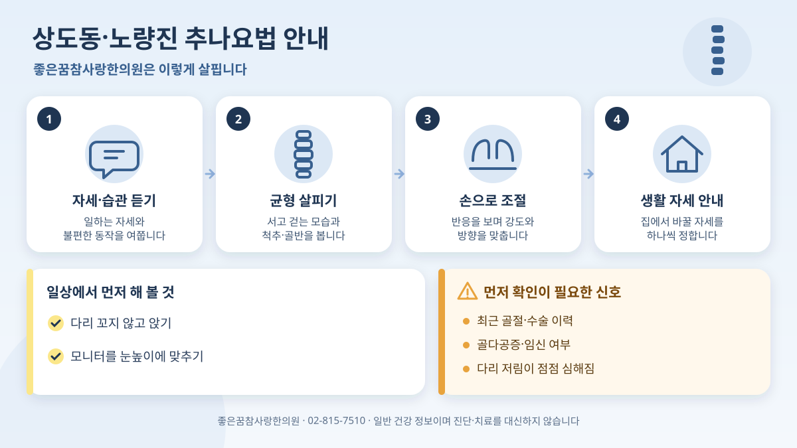
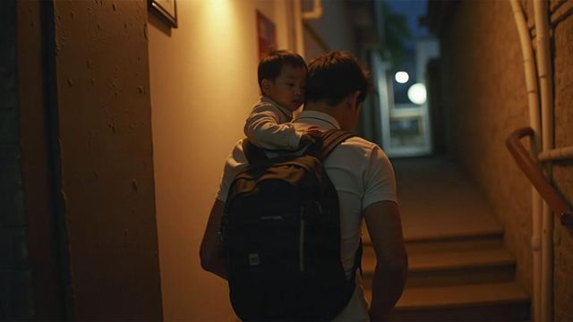
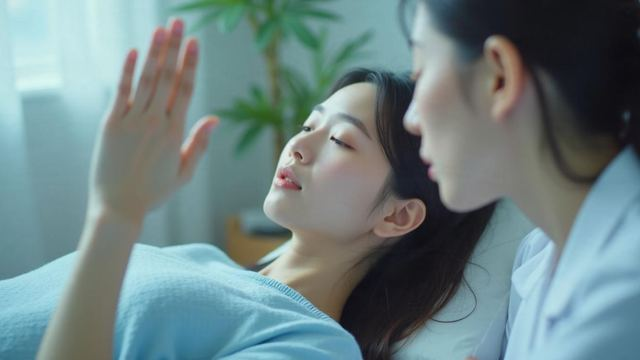
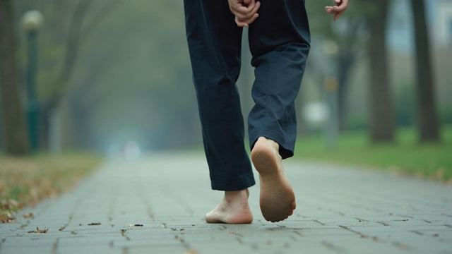
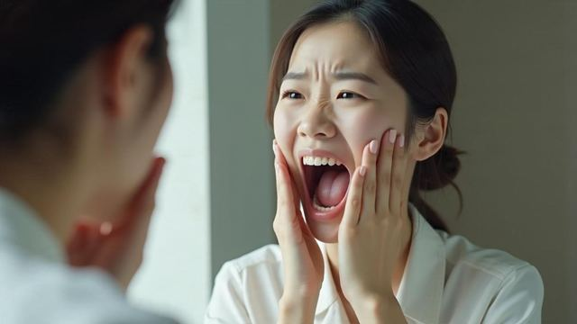
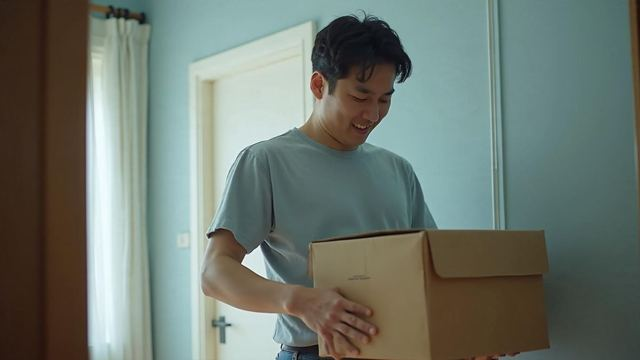
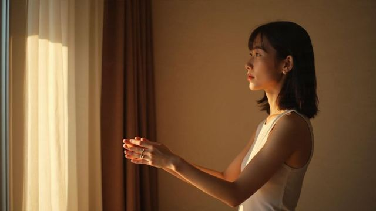
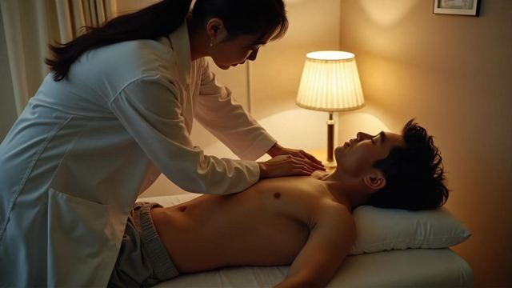
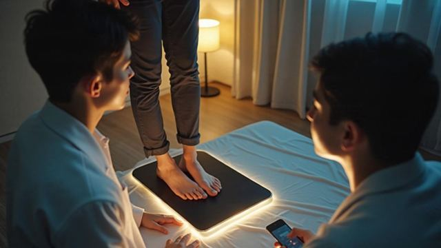

자세가 틀어진 것 같거나 허리·목·골반이 불편한 분을 위한 추나요법 안내입니다. 추나요법은 한의사가 손으로 척추·관절·근육의 균형을 살피고 맞춰 가는 한의학 수기요법이며, 노량진점은 불편한 동작을 먼저 여쭙고 적용 여부를 진찰 후 정합니다.

추나요법은 어떤 진료인가요?
추나는 '밀고(推) 당긴다(拿)'는 뜻으로, 한의사가 손이나 몸의 일부를 이용해 관절과 근육을 움직이며 균형을 살피는 수기요법입니다. 기계에 몸을 맡기는 방식이 아니라 반응을 보며 강도와 방향을 조절합니다.
추나요법은 건강보험이 적용되는 경우가 있어 진찰 후 대상 여부와 본인부담금을 안내합니다. 단순히 뼈를 맞추는 것이 아니라 관절이 움직이는 범위와 근육의 긴장을 함께 살피며 진행합니다.
이런 고민으로 상담하러 오십니다
자세는 하루아침에 바뀌지 않아, 추나와 함께 생활 속 자세 습관을 하나씩 바꿔 가는 것을 중요하게 생각합니다.
- 오래 앉아 공부·업무를 하며 허리가 뻐근할 때
- 한쪽 어깨가 내려가 보이거나 골반이 틀어진 느낌이 들 때
- 고개가 앞으로 나와 목이 뻐근할 때
- 예전에 삔 발목 때문에 걸음이 불편할 때
먼저 이렇게 여쭙니다
- 어떤 자세·동작에서 불편한가요?
- 척추 수술, 골다공증, 최근 골절이 있었나요?
- 임신 중이거나 임신을 준비하고 있나요?
- 혈액을 묽게 하는 약을 드시나요?
- 최근에 무리한 운동이나 이사를 했나요?
생활에서 해 볼 것
스트레칭은 아프지 않은 범위에서 천천히, 숨을 참지 않고 하는 것이 기본입니다. 어떤 동작이 맞는지는 진료 때 자세를 보며 함께 정합니다.
- 다리 꼬기, 한쪽 어깨로 가방 메기 줄이기
- 의자 깊숙이 앉고 허리 받침 쓰기
- 1시간마다 일어나 가볍게 몸 펴기
- 무거운 물건은 무릎을 굽혀 몸 가까이 들기
한의원에서 함께 살피는 것
서 있는 모습, 걷는 모습, 앉는 자세를 직접 보고 통증 부위 주변까지 살핍니다. 필요하다고 판단될 때 추나와 함께 침, 약침, 온열 장비를 이어서 씁니다. 조영기 수석진료원장은 추나요법·통증재활을 주요 진료 분야로 소개하고 있으며 좋은꿈 네트워크 추나의학 학술이사입니다. 건강보험 적용 여부와 본인부담금은 진찰 후 안내합니다.
추나를 받는 날 알아 두면 좋은 것
추나는 반응을 보며 강도를 조절하는 진료라, 받는 동안 느낌을 편하게 말씀해 주시는 것이 중요합니다.
- 식사 직후보다 1시간 정도 지난 뒤가 편합니다
- 움직이기 편한 옷을 입고 오세요
- 치료 중 소리가 날 수 있지만 소리 자체가 목표는 아닙니다
- 받은 뒤 뻐근함이 이어지면 다음 진료 때 꼭 말씀해 주세요
이럴 때는 다른 진료를 먼저 받으세요
아래와 같은 경우에는 추나보다 영상검사나 다른 진료가 먼저입니다.
- 다리 힘 빠짐, 감각 저하, 대소변 장애가 있을 때: 응급 진료
- 넘어지거나 부딪힌 뒤 통증이 심할 때: 영상검사 먼저
- 열이 나거나 이유 없이 체중이 줄 때
- 골다공증이 심하거나 최근 골절이 있을 때: 반드시 미리 알리기
노량진점 진료는 이렇게 진행됩니다
상담에서 불편한 동작을 듣고 자세와 움직임을 살핀 뒤 추나 적용 여부를 정합니다. 치료 중 아프거나 불편하면 바로 말씀해 주세요. 강도와 방법을 그 자리에서 조절하고, 다음 진료에서 같은 동작으로 달라진 점을 확인합니다.
다음 진료에서는 지난번 추나 뒤 몸의 반응, 잠, 일상 동작의 변화를 먼저 여쭙고 그에 맞게 강도와 방법을 조정합니다.
상도동·노량진에서
노량진 학원가 수험생과 사무실 직장인은 하루 대부분을 앉아서 보내고, 상도동 어르신은 언덕길과 계단을 오르내리며 허리·무릎 부담을 느끼곤 합니다. 노량진점은 상도역 3번 출구에서 약 400m 거리에 있으며 평일 저녁 8시까지, 토·일·공휴일 오후 3시까지 진료합니다. 노량진역 3번 출구에서는 마을버스 동작01번으로 오실 수 있습니다.
자주 묻는 질문
노량진 근처에서 추나요법을 받을 수 있는 한의원이 있나요?
좋은꿈참사랑한의원 노량진점에서 추나요법을 합니다. 노량진역 3번 출구에서 마을버스 동작01번을 타고 신동아리버파크 정류장에서 내리면 건너편 건물 3층입니다.
추나요법도 건강보험이 되나요?
적용되는 경우가 있으나 대상과 횟수 등 조건이 있어 진찰 후 안내합니다.
추나를 받을 때 아프지 않나요?
반응을 보며 강도를 조절합니다. 불편하면 참지 말고 바로 말씀해 주세요.
수험생도 추나를 받을 수 있나요?
받을 수 있습니다. 공부하는 자세와 앉아 있는 시간을 함께 여쭙고 진찰 후 적용 여부를 정합니다.
임신을 준비 중인데 추나를 받아도 되나요?
먼저 알려 주세요. 상태를 확인한 뒤 적용 여부와 방법을 정합니다.
어떤 옷을 입고 가면 좋나요?
몸을 움직이기 편한 옷이 좋습니다.
추나는 몇 번 받아야 하나요?
사람마다 다릅니다. 진찰 후 몸의 반응과 생활의 변화를 보며 함께 정합니다.
추나를 받을 때 '뚝' 소리가 나야 하나요?
소리가 나지 않아도 괜찮습니다. 관절이 움직이는 범위와 근육의 긴장을 보며 진행하므로 소리 자체가 목표는 아닙니다.
허리 디스크 진단을 받았는데 추나를 받을 수 있나요?
진단서나 영상 판독지를 가져와 주세요. 현재 증상과 신경 증상 여부를 확인한 뒤 적용 여부를 정합니다.
감수: 좋은꿈참사랑한의원 노량진점 대표원장 이종호 · 마지막 확인 2026-11-24 · 일반적인 건강 정보이며 진단·치료를 대신하지 않습니다.
교정추나 글 모아 보기 (19편)

출퇴근 지하철에서 오래 서 있으면 허리가 뻐근할 때는 어떻게 살피나요?
지하철에 오래 서서 허리가 뻐근할 때는 발을 어깨너비로 벌리고 무릎을 살짝 굽혀 서며 가방을 앞으로 메는 것부터 해 보고, 엉덩이나 다리까지 당기면 서 있는 자세와 골반 균형을 함께 살핍니다.
수정 2026-11-24

스터디카페 낮은 책상에서 고개를 숙여 공부하면 등 위쪽이 뻐근할 때는?
낮은 책상에서 고개를 숙여 등 위쪽이 뻐근할 때는 독서대로 책을 올리고 의자 높이를 맞추며 50분마다 가슴을 펴는 것부터 해 보고, 날개뼈 사이가 자주 뭉치면 앉는 자세와 척추 균형을 함께 살핍니다.
수정 2026-11-24

노트북으로 과제와 시험공부를 오래 하는 대학생의 목과 등이 굽어 보일 때는 어떻게 살피나요?
노트북 화면을 내려다보는 자세가 오래 이어지면 고개가 앞으로 나오고 등이 둥글게 말리기 쉬워, 공부하는 자리와 화면 높이, 불편한 증상을 먼저 묻고 바꿀 수 있는 공부 환경부터 함께 정리합니다.
수정 2026-11-24
상도역에서 지하철로 출퇴근하며 서서 휴대폰을 보다 보면 목과 어깨가 굳을 때는 어떻게 살피나요?
흔들리는 지하철에서 고개를 숙이고 휴대폰을 오래 보면 목 뒤와 어깨에 긴장이 쌓일 수 있어, 출퇴근 시간과 자세, 불편한 동작을 먼저 묻고 이동 중에 바꿀 수 있는 습관을 함께 정리합니다.
수정 2026-11-24

아이를 안고 언덕길을 자주 오르내리는 부모의 허리와 골반이 불편할 때는 어떻게 살피나요?
아이를 한쪽 팔로 안고 오르막을 걸으면 몸이 한쪽으로 기울어 허리와 골반에 부담이 쌓일 수 있어, 안는 방향과 시간, 불편한 동작을 먼저 묻고 일상에서 부담을 나누는 방법을 함께 찾습니다.
수정 2026-11-24
노량진 근처에서 추나요법을 처음 받아 보려는데, 받기 전에 스스로 확인해 둘 것은 무엇인가요?
추나요법을 처음 받기 전에는 불편한 동작 한두 가지, 최근 영상 검사 결과, 수술·골절·골다공증 이력, 임신 가능성, 복용 중인 약을 정리해 오세요. 진찰 후 추나가 맞는지 판단하고 적용 방법을 정하는 데 도움이 됩니다.
수정 2026-11-24
무거운 가방을 한쪽 어깨로만 메고 다니면 어깨 높이가 달라 보일 때는?
무거운 가방을 한쪽으로만 메어 어깨 높이가 달라 보일 때는 백팩으로 바꾸고 가방 무게를 줄이는 것부터 시작하며, 한쪽 목·등이 자주 뭉치면 자세와 척추·골반의 균형을 함께 살핍니다.
수정 2026-11-24
거북목과 일자목은 추나로 어떻게 살피나요?
거북목과 일자목은 모양보다 실제 불편이 있는지가 중요해, 고개를 돌리고 숙이는 동작과 어깨·등의 움직임, 화면을 보는 시간을 먼저 확인하고 필요하다고 판단될 때 상태에 맞는 강도로 추나를 진행합니다.
수정 2026-11-24

추나나 침 치료를 받다가 불편하면 바로 말해도 되나요?
추나나 침 치료 중 아프거나 불편하면 바로 말씀해 주셔야 강도와 방법을 조절할 수 있으며, 참고 견디는 것보다 그때그때 말하는 것이 안전합니다.
수정 2026-11-24
하루 종일 서서 일하면 저녁마다 허리가 묵직할 때 어떻게 살피나요?
하루 종일 서서 일해 저녁마다 허리가 묵직하면 서 있는 시간과 자세, 바닥과 신발, 쉬는 방법을 먼저 묻고 골반 균형을 살핀 뒤 필요하면 추나와 침을 검토합니다.
수정 2026-11-24
임신을 준비 중이거나 임신 가능성이 있으면 추나 전에 무엇을 알려야 하나요?
임신을 준비 중이거나 임신 가능성이 있으면 마지막 생리일, 난임·호르몬 치료 여부, 복용 중인 약과 영양제를 추나 전에 꼭 알려 주셔야 하며, 그에 따라 자세와 방법, 함께 쓰는 치료가 달라집니다.
수정 2026-11-24

예전에 발목을 자주 삐었는데 요즘 무릎과 허리가 불편하면 연관이 있나요?
발목을 자주 삐면 걷는 모습과 체중을 싣는 습관이 조금씩 달라질 수 있어, 예전 부상과 지금 걷는 모습, 신발 닳는 모양을 함께 보고 필요하면 추나로 발목부터 허리까지의 균형을 살핍니다.
수정 2026-11-24

입을 벌릴 때 턱에서 소리가 나고 불편하면 어떻게 살피나요?
입을 벌릴 때 턱에서 소리가 나고 불편하면 이 악물기, 한쪽으로 씹기, 턱 괴기 같은 습관과 목·어깨 긴장을 먼저 묻고, 필요하면 추나와 침을 검토하며 치아·교합 문제는 치과를 안내합니다.
수정 2026-11-24
노량진에서 하루 종일 앉아 공부하는 수험생의 허리와 목은 어떻게 살피나요?
하루 10시간 넘게 앉아 공부하는 수험생의 허리와 목은 앉는 시간과 책상 환경, 쉬는 습관, 잠을 먼저 묻고 자세와 척추 균형을 살핀 뒤 필요하면 추나와 침을 검토합니다.
수정 2026-11-24

이사나 대청소 뒤 허리와 어깨가 결릴 때 추나는 어떻게 살피나요?
이사나 대청소처럼 무거운 것을 들고 오래 굽힌 뒤 허리와 어깨가 결리면 어떤 동작을 했는지와 지금 아픈 동작을 먼저 묻고, 척추 균형을 살핀 뒤 필요하면 추나와 침을 검토합니다.
수정 2026-11-24

허리가 앞으로 많이 휜 느낌일 때는 자세를 어떻게 점검하나요?
허리가 앞으로 과하게 휜 듯한 자세는 골반 기울기, 배와 엉덩이 근육의 쓰임, 신발 습관과 함께 살피며, 다리 저림이나 밤에도 심한 통증이 있으면 진료를 권합니다.
수정 2026-11-24
추나요법 건강보험 적용은 어떻게 확인하나요?
추나요법은 일정한 조건에서 건강보험이 적용되지만 대상과 연간 횟수, 본인부담 같은 조건은 바뀔 수 있어, 방문 전에 한의원이나 건강보험공단에 확인하는 것이 안전합니다.
수정 2026-11-24

교정추나는 어떤 진료이고, 어떤 경우에 받나요?
교정추나는 손으로 척추·관절·근육의 균형을 살피고 맞춰 가는 한의학 수기요법으로, 불편한 동작과 자세를 먼저 확인한 뒤 필요하다고 판단될 때 진행하며 건강보험 적용 여부는 진찰 후 안내합니다.
수정 2026-11-24

전신 체형 검사와 족저 검사는 무엇을 살피나요?
체형 확인은 서 있는 자세에서 어깨·골반·무릎의 균형을, 발 확인은 체중이 어디에 실리는지를 살펴 통증의 이유를 가늠하는 참고 자료로 쓰며, 측정 장비 검사 여부는 방문 전에 문의해 주세요.
수정 2026-11-24